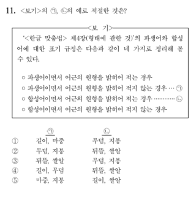

고등 국어 학습법 - 문법
독서
문학
문법
문법
 1학년은 문제 양으로 승부볼 때가 아니라 개념에 집중해야 하는 시기이므로, 문법 시간 때 나눠준 프린트에 나온 개념을 기초로 쌓고 그 위에 각자 추가하면서 본인만의 문법노트 만들기
마더텅 고1 국어 문법
: 기출문제 풀어보기
떠먹는 국어문법
: 개념이 방대하긴 하지만 자세하게 다 설명돼 있어서 개념서로 쓰기 좋음. 이 책 참고하면서 본인만의 문법노트 정리해가기.